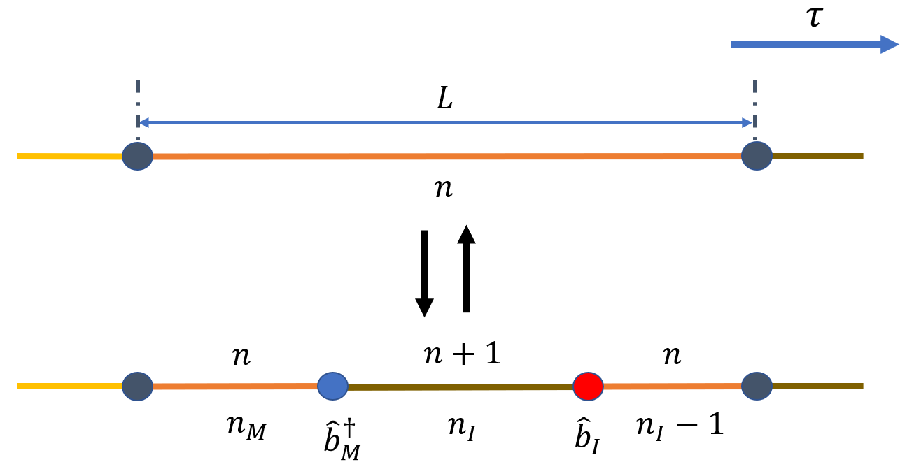
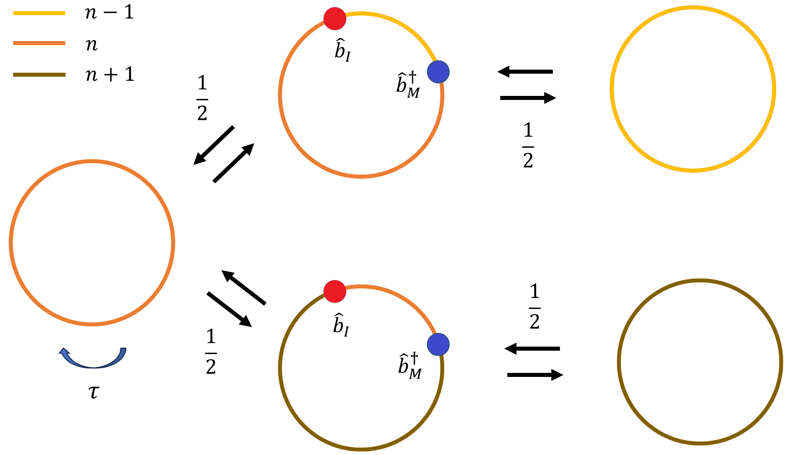

连续时间的世界线 Worm 算法¶
概述¶
考虑一个晶格系统的哈密顿量 $\hat{H}$, 对于完备的基矢量 $\alpha$，配分函数可以写为： $$\mathcal{Z} = {\rm Tr} (e^{-\beta\hat{H}}) = \sum_{\alpha} \langle \alpha | e^{-\beta\hat{H}} |\alpha \rangle$$ 在这里，哈密顿量可以视为一个很大的矩阵，其基矢量通常是在 Fock 空间下展开的。
若 $\hat{H}$ 矩阵是 1x1 的，即 c-number，态 $|\alpha\rangle$ 是归一化的数字，即1. 从而，$\mathcal{Z}$ 便退化为经典模型的配分函数。不难看出，相比经典模型，量子模型的权重因为存在算符 $e^{-\beta \hat{H}}$ 不是那么容易就能写出，需要利用完备性关系插入完备的基矢量， 多了一层对态 $|\alpha\rangle$ 演化的求和过程，这体现在其增加了虚时方向的维度，即世界线。
其中 $e^{-\beta \hat{H}}$ 可以和时间演化算符 $e^{-i\hat{H}t}$ 进行类比，我们定义虚时 $\beta = it $. 为了将配分函数捣鼓成可计算的形式，进而构建随机过程进行蒙卡模拟, 我们有很多种选择。为了方便起见，这里暂时不考虑符号问题。
(1) 对于费米子体系:
费曼图蒙卡 (DiagMC) : 类比实时量子场论的做法，从虚时演化算符与其格林函数出发，利用微扰论展开得到均值表达式，通过对费曼图的抽样，直接得到热力学极限下的观测量。
行列式蒙卡 (DQMC) : 以 Hubbard 模型为例，对于 hopping 项，利用等式 ${\rm Tr} [ e^{-\sum_{i,j} A_{i,j} \hat{c}_{i}^\dagger\hat{c}_j } ] = {\rm Det} [{\bf 1}+e^{-{\bf A}}]$
将权重转化为行列式；对于相互作用项，利用 HS 变换引入辅助场进行解耦。(2) 对于玻色子或自旋体系：
随机级数展开 (SSE) : 利用展开 $e^{-\beta \hat{H}} = \sum_{n=0}^{\infty} \frac{\beta^n}{n!}(-\hat{H})^n$, 将指数上的哈密顿量放下来，从而能够通过写出矩阵元 $\langle \alpha^{(i+1)} |\hat{H}| \alpha^{(i)} \rangle$ 来计算权重，设计算法。
对于世界线的 Worm 算法，其将虚时 $\beta$ 离散化为等分的 $N$ 段，即取小量 $\tau = \beta / N$, 再通过插入完备基矢量的方法可以将配分函数写为如下的积和式： $$ \boxed{\mathcal{Z} = \sum_{\lbrace \alpha^{(i)} \rbrace} \prod_{i=0}^{N-1} \langle \alpha^{(i+1)} | e^{-\tau \hat{H}} | \alpha^{(i)} \rangle =\sum_{\lbrace \alpha^{(i)} \rbrace} W(\lbrace \alpha^{(i)} \rbrace)} $$ 其中 $\alpha^{(0)} $ 与 $ \alpha^{(N)}$ 为同一世界面，即原始求迹过程中 $e^{- \beta \hat{H}}$ 两边所夹的基矢量。求和符号下标 $\lbrace \alpha^{(i)} \rbrace$ 表示对于基矢量的序列求和，该序列包含从 $\alpha^{(0)} $ 到 $\alpha^{(N-1)} $ 共 $N$ 项。而 $W(\lbrace \alpha^{(i)} \rbrace)$ 记为序列的权重。
配分函数空间 $\mathcal{Z}$¶
值得注意的是，尽管这里的求和遍历了序列 $\lbrace \alpha^{(i)} \rbrace$ 所有的可能性，但是有些可能性会使得连乘式当中出现值为 0 的项，从而导致整个序列对配分函数的权重不做贡献。而判断是否出现值为 0 的项，则需要分析哈密顿量的具体形式，并且通常取决于 hopping 的形式，具体分析如下。
构型的权重¶
对配分函数其中的一个重复单元有: $$ \langle \alpha^{(i+1)} |e^{-\tau \hat{H}} | \alpha^{(i)} \rangle \approx e^{-\tau H_0} \langle \alpha^{(i+1)} | e^{-\tau \hat{V}}| \alpha^{(i)}\rangle \approx e^{-\tau H_0} \langle \alpha^{(i+1)} | {\bf 1} - \tau \hat{V}| \alpha^{(i)}\rangle $$ 其中 $\boxed{\hat{H} = \hat{H}_0 + \hat{V}}$ , 前者为所选基矢量下的对角项，后者是非对角项。第一个近似利用到了 Trotter 分解，即：
$$e^{-\tau\hat{H}} = e^{-\tau\hat{H}_0} e^{-\tau\hat{V}} + \mathcal{O}(\tau^2)\approx e^{-\tau\hat{H}_0} e^{-\tau\hat{V}}$$
第二个近似是根据 $\tau$ 为小量而进行的泰勒展开，并展开到1阶 (也可以展开到高阶，但高阶一般都会忽略掉)。
注意，上式当中的 $H_0$ 若不含虚数，表示的是 $\langle \alpha^{(i+1)}|$ 的对角能量，因为 $\langle \alpha^{(i+1)}| e^{-\tau \hat{H}_0} = e^{-\tau H_0} \langle \alpha^{(i+1)}|$. 但实际上由于世界线都是圈，故无论是 $\langle \alpha^{(i+1)}|$ 还是 $|\alpha^{(i)}\rangle$ 的对角能量，经过最终的求和都会得到相同的总的对角能量。
通常非对角项 $\hat{V}$ 会改变原本的态，因此根据表达式 $$ \langle \alpha^{(i+1)} |e^{-\tau \hat{H}} | \alpha^{(i)} \rangle \approx e^{-\tau H_0} \langle \alpha^{(i+1)}| \alpha^{(i)} \rangle - \tau e^{-\tau H_0} \langle \alpha^{(i+1)}| \hat{V} |\alpha^{(i)} \rangle $$ 我们不难分析出，当序列 $\lbrace \alpha^{(i)} \rbrace$ 相邻的两个态没有发生变化时，上式第二项由于 $\hat{V}$ 的作用，会使两边原本一样的态变得正交，从而做内积之后会消失，仅有第一项有贡献。 相反，若相邻的两个态发生了变化并满足 $\langle \alpha^{(i+1)}| \hat{V} |\alpha^{(i)} \rangle \neq 0$ 时，上式第一项会消失，仅有第二项有贡献；若不满足，则两项均无贡献。
根据上面的性质，我们可以将配分函数的权重进行合并来写出显式。我们将一个序列 (或称为虚时构型) 当中相邻态 (或相邻世界面) 发生改变的次数计为 $\mathcal{K}$, 从而我们可以写出构型的权重为： $$ \boxed{W(\lbrace \alpha^{(i)} \rbrace) \approx W(\mathcal{K},i(k),\lbrace \alpha^{(i(k))} \rbrace) = (-\tau)^{\mathcal{K}} \prod_{k = 0}^{\mathcal{K}-1}\langle \alpha^{(i(k)+1)}|\hat{V} | \alpha^{(i(k))} \rangle \exp \left({-\sum_{i=0}^{N-1} H_0^{(i)} \tau} \right)} $$ 其中 $i(k)$ 表示第 $k$ 个发生改变的虚时层数。对于 $\mathcal{K} \geq 2$ 情况下，$\lbrace \alpha^{(i(k))} \rbrace$ 表示发生改变前的 $\mathcal{K}$ 个态组成的序列; $\mathcal{K} = 0$ 时，仅表示一个态组成的序列；而 $\mathcal{K} = 1$ 通常不可能发生。相比原始形式的求和，上述形式的权重相当于将序列根据发生改变次数进行分类，关系如下： $$ \sum_{\lbrace \alpha^{(i)} \rbrace} W(\lbrace \alpha^{(i)} \rbrace) \rightarrow \sum_{\mathcal{K}=0}^{\infty} \sum_{i(0) = 0}^{N-1} \sum_{i(1) = i(0)}^{N-1} \cdots \sum_{i(\mathcal{K}-1)=i(\mathcal{K}-2)}^{N-1} \sum_{\lbrace \alpha^{(i(k))} \rbrace } W(\mathcal{K},i(k),\lbrace \alpha^{(i)} \rbrace) $$ 注意，虽然改变次数 $\mathcal{K}$ 可以从 0 取到 $\infty$, 但对于 $\mathcal{K} = 0,1$ 的时候，需要特殊考虑。 而改变发生的时刻的虚时层数 $i(k)$ 也有如上的取值方法，遍历了所有可能的情况。除此之外，发生改变的格点位置并未指定，仍需要通过求和 $\sum_{\lbrace \alpha^{(i(k))} \rbrace}$ 来筛选满足 $\langle \alpha^{(i+1)} |\hat{V}|\alpha^{(i)} \rangle \neq 0$ 的构型，其中 $\lbrace \alpha^{(i(k))} \rbrace$ 在不同 $\mathcal{K}$ 值的情况下要分类讨论。
总的来说，以上几式仅对 $\mathcal{K} \geq 2$ 的情况严格成立，并且似乎权重的形式变得更加复杂了，但由于写出了显式，成为之后设计算法的基石。
当 $N\rightarrow\infty$, 可将小量 $\tau$ 取为微元 $d\tau$, 同时原本离散的序列也变为连续的函数 $\alpha(\tau)$, 可将权重写为连续变量的形式，更符合路径积分的风格： $$ W(\mathcal{K},\tau(k),\lbrace \alpha(\tau(k)) \rbrace) = (-d\tau)^{\mathcal{K}} \prod_{k=0}^{\mathcal{K}-1}\langle \alpha({\tau}(k) + d\tau)|\hat{V} | \alpha({\tau}(k)) \rangle \exp \left({-\int_{0}^{\beta} H_0(\tau') d\tau'} \right) $$ 其中 $\tau(k)$ 表示第 $k$ 个发生改变的虚时时刻。 总的来说，可将配分函数写为如下的求和形式： $$ \sum_{\mathcal{K}=0}^{\infty} \int_{0}^\beta \int_{\tau(0)}^\beta \cdots \int_{\tau(\mathcal{K}-2)}^\beta \sum_{\lbrace \alpha(\tau(k)) \rbrace} W(\mathcal{K},\tau(k),\lbrace \alpha(\tau(k)) \rbrace) $$ 事实上，笔者更喜欢权重的离散化表示，因为在实际计算机进行模拟的时候，归根到底仍然是在处理离散的数组。从而后续的推导均采用离散的形式。
几种常见的非对角项¶
现在我们知道，要想解析地写出权重表达式，计算非对角项矩阵元 $\langle \alpha^{(i+1)}|\hat{V} | \alpha^{(i)} \rangle$ 必不可少。 为了更加形象，我们举几个例子：
(1) hopping 项 : $$\hat{V} = -t \sum_{\langle ij \rangle} \left( \hat{b}_i^\dagger \hat{b}_j + \hat{b}_j^\dagger \hat{b}_i \right) $$ 上式表明，$\langle \alpha^{(i+1)} |\hat{V}|\alpha^{(i)} \rangle$ 项不为 0 即要求构型 $|\alpha^{(i+1)} \rangle$ 和 $|\alpha^{(i)} \rangle$ 之间相差一个最近邻的 hopping.
严格来说，$e^{-\tau \hat{V}}$ 展开到一阶只能允许同一时刻发生一次最近邻的 hopping, 发生多次需要我们展开到更高阶重新写出权重，重新设计算法。然而一方面在连续时间算法当中，世界面的数目 $N$ 取为 $10^8$ 量级，构型刚好出现同一时刻多次 hopping 的概率非常小；另一方面，考虑高阶会使得程序复杂，效率降低，因而暂时不考虑高阶展开。
考虑一个从格点 $i$ 跃迁到格点 $j$ 的过程贡献： $$ \boxed{-t\langle \alpha^{(i+1)} |\hat{b}_j^\dagger \hat{b}_i |\alpha^{(i)} \rangle =-t\sqrt{n_i(n_j+1)} \quad ({\rm site} ~i\rightarrow {\rm site} ~j)} $$
注意 $\alpha^{(i)}$ 当中的 $i$ 是对构型中不同世界面的指标，而 $\hat{b}_i$ 当中的 $i$ 是对某一个世界面当中不同格点的指标。
其中 $n_i$ 与 $n_j$ 表示跃迁发生之前格点 $i$ 与 格点 $j$ 所拥有的粒子数。 具体情况如下图所示： 从图中可以形象的将系数理解为沿着虚时方向，跃迁粒子所在世界线段上的粒子数乘积的根值。
(2) pairing 项 ： $$\hat{V} = -t \sum_{\langle ij \rangle} \left( \hat{b}_i^\dagger \hat{b}_j^\dagger + \hat{b}_j \hat{b}_i \right) $$ 上式表明，$\langle \alpha^{(i+1)} |\hat{V}|\alpha^{(i)} \rangle$ 项不为 0 即要求构型 $|\alpha^{(i+1)} \rangle$ 和 $|\alpha^{(i)} \rangle$ 之间相差一个最近邻的 pairing.
考虑从某一虚时刻，格点 $i$ 和格点 $j$ 同时增加一个粒子的贡献为： $$ \boxed{-t\langle \alpha^{(i+1)} |\hat{b}_j^\dagger \hat{b}_i^\dagger |\alpha^{(i)} \rangle =-t\sqrt{(n_i+1)(n_j+1)}} $$
类似于 hopping 项，具体如下图： 可以看出，系数是增加之后 (或减少之前) 的粒子数乘积的根值。
(3) flipping 项 ： $$\hat{V} = -h\sum_{i}\hat{\sigma}_i^x$$ 上式表明，$\langle \alpha^{(i+1)} |\hat{V}|\alpha^{(i)} \rangle$ 项不为 0 即要求构型 $|\alpha^{(i+1)} \rangle$ 和 $|\alpha^{(i)} \rangle$ 之间在同一格点相差一个 flipping.
考虑一个 $|\uparrow\rangle$ 态在某一虚时刻改变为 $|\downarrow\rangle$ 态，其贡献为： $$ \boxed{-h\langle \alpha^{(i+1)} |\hat{\sigma}^x_i |\alpha^{(i)} \rangle =-h} $$ 其中 $x$ 方向的泡利矩阵，相当于对自旋态做翻转。通常来说，自旋体系对系数的贡献都是 1. 具体如下图：
格林函数空间 $\mathcal{G}$¶
上述的构型权重所在的相空间被称为配分函数空间 $\mathcal{Z}$，这是因为其构型完全符合物理上世界线的定义。然而，算法中为了高效地更新构型，我们引入具有两个缺陷（不连续点, worm）的世界线构型空间 $\mathcal{G}$, 由于该空间的配分函数正比于松原格林函数的求和，也被称为格林函数空间。从而，蒙卡抽样的完整空间 $\mathcal{Z}_w$ 可写为： $$ \boxed{\mathcal{Z}_w = \mathcal{Z} + \omega_G \mathcal{G}} $$ 其中 $\omega_G$ 为可调的参数，用于控制两空间的占比。
在玻色系统当中，两个缺陷分别由产生算符 $\hat{b}^\dagger_{M}$ 与湮灭算符 $\hat{b}_{I}$ 所表示, 且分别位于虚时 $\tau_M$ 与 $\tau_I$, 则我们可以定义函数为:
$$
g(I,M,\tau_I,\tau_M) =
{\rm Tr}[\mathcal{T} \hat{b}_I(\tau_I)\hat{b}^\dagger_M(\tau_M) e^{-\beta\hat{H}}]
$$
注意其中的产生湮灭算符均在海森堡绘景下，且 $\mathcal{T}$ 为编时算符。 虚时 $\tau_M$ 与 $\tau_I$ 的取值为 0 到 $\beta$（而 $\tau$ 则表示一个很小的量）, $I$ 与 $M$ 表示格点标号。我们将海森堡绘景的虚时演化代入，并假设 $\tau_M < \tau_I$，不难整理得到： $$ {\rm Tr}[e^{-(\beta - \tau_I - \tau_M)\hat{H}} \hat{b}_I e^{-(\tau_I - \tau_M) \hat{H}} \hat{b}_M^\dagger e^{-\tau_M \hat{H}}] $$
反之 $\tau_M > \tau_I$ 也是类似的。上式的物理意义十分清晰，即在 $\tau_M$ 与 $\tau_I$ 虚时时刻，世界线某一格点上的粒子态增加或减少了一个粒子。
值得注意的是，之前也提到过由于世界面的数目 $N$ 极其之大，虚时完全可以看作是连续的，因此在同一虚时时刻默认最多只发生一次态的改变。根据该特性，既然已知在 $\tau_M$ 与 $\tau_I$ 虚时时刻，态会由于 $\hat{b}^\dagger_{M}$ 与 $\hat{b}_{I}$ 发生改变，那么就不会由于 $\hat{V}$ 的作用而发生改变，即有如下代换： $$ \langle \alpha^{(i(I)+1)}|\hat{b}_I e^{-\tau \hat{H}} | \alpha^{(i(I))} \rangle \rightarrow e^{-\tau H_0} \langle \alpha^{(i(I)+1)}|\hat{b}_I| \alpha^{(i(I))} \rangle $$ 其中 $i(I)$ 表示 $\tau_I$ 对应的虚时层数。类似地，也可以定义 $i(M)$. 严格来说，上式需要额外再加一层完备基矢量，然而由于同一虚时只发生一次改变的要求，故加的基矢量是没有自由度的，只能与 $|\alpha^{(i(I))} \rangle$ 相同才有贡献，即： $$ \langle \alpha^{(i(I)+1)}|\hat{b}_I | \alpha^{(i(I))} \rangle \langle \alpha^{(i(I))} | e^{-\tau \hat{H}} | \alpha^{(i(I))} \rangle $$ 因此我们并不需要增加额外的标识。
为了写出权重的显式，利用上面的技巧以及前面的做法，我们先写出函数 $g$ 的展开形式： $$ \sum_{\lbrace \alpha^{(i)} \rbrace} \langle \alpha^{(i(M)+1)}|\hat{b}^\dagger_M| \alpha^{(i(M))} \rangle \langle \alpha^{(i(I)+1)}|\hat{b}_I| \alpha^{(i(I))} \rangle W(\lbrace \alpha^{(i)} \rbrace) $$ 其中多出来的缺陷 (worm head) 的权重的贡献： $\sqrt{n_I (n_M + 1)}$, 而 $n_I$ 与 $n_M$ 分别为相应算符作用前的粒子数。对于硬核玻色子 (hard-core) 的情况，这个系数通常是 1.
相应地，松原格林函数可以定义为： $$ \boxed{G(I,M,\tau_I,\tau_M) = \left \langle \hat{b}_I(\tau_I) \hat{b}^\dagger_M(\tau_M) \right \rangle = \frac{g(I,M,\tau_I,\tau_M)}{\mathcal{Z}} } $$ 不难看出，测量上述的格林函数，只需统计两缺陷的时空分布（直方图）即可，这在格林函数空间 $\mathcal{G}$ 是可以直接测量的，十分方便。
此外，该空间当中的配分函数写为: $$ \mathcal{G} = \sum_{p_I,p_M = 0 ~(p_I\neq p_I)}^{N-1} \sum_{I,M=0}^{N_s-1} g(I,M,p_I\tau,p_M\tau) \tau^2 = \sum_{p_I,p_M = 0 ~(p_I\neq p_I)}^{N-1} \sum_{I,M=0}^{N_s-1} W_{\mathcal{G}} $$ 即对两缺陷处于时空的所有可能情况进行求和，注意除去处于同一虚时时刻的情况。这里 $N_s$ 表示一个世界面当中的格点数目，$N$ 表示世界面的个数。变量 $p_I,p_M$ 表示虚时层数的标号，注意需要在求和时添加虚时最小间隔 $\tau^2$, 对应到连续化后的 $\int_0^\beta \int_0^\beta d\tau_I d\tau_M$ 当中的 $d\tau_I d\tau_M$.
这里似乎会有疑问，相比配分函数空间权重当中的 $\tau^{\mathcal{K}}$, 这里的 $\tau^2$ 似乎是额外添加的。事实上，这是因为配分函数本身就是一个数字，已经包含了完整的求和变量等；而这里拓展的格林函数空间并没有完整的求和变量，而且函数 $g$ 的求迹过程并不包含对两个缺陷的时空坐标的求和，需要外部添加才行。另一方面，对格点求和，由于间隔为 1, 故不需要添加求和变量；而对虚时的求和，随着 $N$ 不断增大，虚时的划分越来越精细，如果直接求和必然无法收敛，肯定要添加求和变量 $\tau^2$ 使得函数收敛。这一点在连续化时间之后很好理解，但在离散化形式下确实需要洞察力。
综上，我们可以将格林函数空间的权重写为： $$ \boxed{W_{\mathcal{G}} (\mathcal{K},i(k), i(I), i(M),\lbrace \alpha^{(i(k))},\alpha^{(i(I))},\alpha^{(i(M))} \rbrace) = \tau^2 \sqrt{n_I (n_M + 1)} W(\mathcal{K},i(k),\lbrace \alpha^{(i(k))} \rbrace)} $$
对应的求和可以写为： $$ \sum_{p_I,p_M = 0 ~(p_I\neq p_I)}^{N-1} \sum_{I,M=0}^{N_s-1} \sum_{\mathcal{K}=0}^{\infty} \sum_{i(0) = 0}^{N-1} \sum_{i(1) = i(0)}^{N-1} \cdots \sum_{i(\mathcal{K}-1)=i(\mathcal{K}-2)}^{N-1} \sum_{\lbrace \alpha^{(i(k))},\alpha^{(i(I))},\alpha^{(i(M))} \rbrace} W_{\mathcal{G}} $$
对于自旋体系，也可以有类似定义： $$g(I,M,\tau_I,\tau_M) = {\rm Tr}[\mathcal{T} \hat{\sigma}_I^{x}(\tau_I) \hat{\sigma}_M^{x}(\tau_M) e^{-\beta\hat{H}}] $$
构型的更新¶
为了尽可能少的占用内存，我们不可能将每个虚时的态都存下来，那样会占用 $O(N N_s)$ 的空间内存。为此，我们引入类 segment 用于存储量子态一致的一段世界线，包含了量子态、起始时刻、长度、发生跃迁和前后衔接的其他片段等等。从而，我们的空间内存可以减少到 $O(\beta N_s)$ 的量级。
构型的更新在 $\mathcal{Z}_w$ 空间当中进行。然而有些模型，我们并不需要考虑配分函数空间 $\mathcal{G}$, 例如横场伊辛模型：
$$ \hat{H_0} = - t \sum_{\langle ij \rangle} \hat{\sigma}_i^z \hat{\sigma}_j^z \quad \hat{V} = \sum_i \hat{\sigma}_i^x $$
Shift Cut¶
$$ W(\nu) \cdot \frac{p_{\rm shift}}{N_{\rm seg}} \cdot \frac{\tau}{L_a + L_b} \cdot P_{\rm acc}^{(\nu\rightarrow\nu')} = W(\nu') \cdot \frac{p_{\rm shift}}{N_{\rm seg}} \cdot \frac{\tau}{L_a' + L_b'} \cdot P_{\rm acc}^{(\nu'\rightarrow\nu)} $$
$$ \boxed{P_{\rm acc}^{(\nu\rightarrow\nu')} = {\rm min} \left[1, e^{{-\sum [H_0(\nu') - H_0(\nu)] \tau} } \right]} $$
Create/Delete Segment¶
$$ W(\nu) \cdot p_{\rm cresg} \cdot \frac{1}{N_{\rm seg}} \cdot \frac{2 \tau^2}{L^2} \cdot P_{\rm acc}^{(\nu\rightarrow\nu')} = W(\nu') \cdot p_{\rm delsg} \cdot \frac{1}{N_{\rm seg}'} \cdot P_{\rm acc}^{(\nu'\rightarrow\nu)} $$
Create Segment
$$ \boxed{P_{\rm acc}^{(\nu\rightarrow\nu')} = {\rm min} \left[1, \frac{p_{\rm delsg}}{p_{\rm cresg}} \cdot \frac{N_{\rm seg}}{N_{\rm seg}'} \cdot \frac{L^2}{2} \cdot \langle \alpha^{(i(k)+1)} |\hat{V}| \alpha^{i(k)} \rangle^2 \cdot e^{{-\sum [H_0(\nu') - H_0(\nu)] \tau} } \right]} $$
$\langle \alpha^{(i(k)+1)} |\hat{V}| \alpha^{i(k)} \rangle = -h$
Delete Segment
$$ \boxed{P_{\rm acc}^{(\nu'\rightarrow\nu)} = {\rm min} \left[1, \frac{p_{\rm cresg}}{p_{\rm delsg}} \cdot \frac{N_{\rm seg}'}{N_{\rm seg}} \cdot \frac{2}{L^2} \cdot \frac{1}{\langle \alpha^{(i(k)+1)} |\hat{V}| \alpha^{i(k)} \rangle^2} \cdot e^{{-\sum [H_0(\nu) - H_0(\nu')] \tau} } \right]} $$
事实上，当我们
下面，我们以 Bose-Hubbard 模型为例，对于存在 hopping 项的玻色格点系统，通常有如下三种更新，其中前两个分别指的是 Worm 在虚时方向移动以及在格点空间方向移动，第三个则是在 $\mathcal{Z}$ 空间与 $\mathcal{G}$ 空间当中转换。
Shift Worm¶
$\nu \rightarrow \nu'$
$$ \omega_G W_{\mathcal{G}} (\nu) \cdot p_{\rm shift} \cdot \frac{\tau}{L_a + L_b} \cdot P_{\rm acc}^{(\nu\rightarrow\nu')} = \omega_G W_{\mathcal{G}} (\nu') \cdot p_{\rm shift} \cdot \frac{\tau}{L_a' + L_b'} \cdot P_{\rm acc}^{(\nu'\rightarrow\nu)} $$
$$ \boxed{P_{\rm acc}^{(\nu\rightarrow\nu')} = {\rm min} \left[1, e^{{-\sum [H_0(\nu') - H_0(\nu)] \tau} } \right]} $$
Create/Delete Kink¶
Kink Before:
$$ \omega_G W_{\mathcal{G}} (\nu) \cdot p_{\rm crekb} \cdot \frac{1}{z} \cdot \frac{\tau}{L_a} \cdot P_{\rm acc}^{(\nu\rightarrow\nu')} = \omega_G W_{\mathcal{G}} (\nu') \cdot p_{\rm delkb} \cdot P_{\rm acc}^{(\nu'\rightarrow\nu)} $$
Create Kink Before
$$ \boxed{P_{\rm acc}^{(\nu\rightarrow\nu')} = {\rm min} \left[1, \frac{p_{\rm delkb}}{p_{\rm crekb}} \cdot z L_a \cdot \frac{\sqrt{n_I'(n_M'+1)}}{\sqrt{n_I(n_M+1)}} \cdot [- \langle \alpha^{(i(k)+1)} |\hat{V}| \alpha^{i(k)} \rangle] \cdot e^{{-\sum [H_0(\nu') - H_0(\nu)] \tau} } \right]} $$
$\langle \alpha^{(i(k)+1)} |\hat{V}| \alpha^{i(k)} \rangle = - t\sqrt{n_I n_I'}$
Delete Kink Before
$$ \boxed{P_{\rm acc}^{(\nu'\rightarrow\nu)} = {\rm min} \left[1, \frac{p_{\rm crekb}}{p_{\rm delkb}} \cdot \frac{1}{z L_a} \cdot \frac{\sqrt{n_I(n_M+1)}}{\sqrt{n_I'(n_M'+1)}} \cdot \frac{-1}{\langle \alpha^{(i(k)+1)} |\hat{V}| \alpha^{i(k)} \rangle} \cdot e^{{-\sum [H_0(\nu) - H_0(\nu')] \tau} } \right]} $$
Kink After:
$$ \omega_G W_{\mathcal{G}} (\nu) \cdot p_{\rm creka} \cdot \frac{1}{z} \cdot \frac{\tau}{L_b} \cdot P_{\rm acc}^{(\nu\rightarrow\nu')} = \omega_G W_{\mathcal{G}} (\nu') \cdot p_{\rm delka} \cdot P_{\rm acc}^{(\nu'\rightarrow\nu)} $$
Create Kink After
$$ \boxed{P_{\rm acc}^{(\nu\rightarrow\nu')} = {\rm min} \left[1, \frac{p_{\rm delka}}{p_{\rm creka}} \cdot z L_b \cdot \frac{\sqrt{n_I'(n_M'+1)}}{\sqrt{n_I(n_M+1)}} \cdot [- \langle \alpha^{(i(k)+1)} |\hat{V}| \alpha^{i(k)} \rangle] \cdot e^{{-\sum [H_0(\nu') - H_0(\nu)] \tau} } \right]} $$
Delete Kink After
$$ \boxed{P_{\rm acc}^{(\nu'\rightarrow\nu)} = {\rm min} \left[1, \frac{p_{\rm creka}}{p_{\rm delka}} \cdot \frac{1}{z L_b} \cdot \frac{\sqrt{n_I(n_M+1)}}{\sqrt{n_I'(n_M'+1)}} \cdot \frac{-1}{\langle \alpha^{(i(k)+1)} |\hat{V}| \alpha^{i(k)} \rangle} \cdot e^{{-\sum [H_0(\nu) - H_0(\nu')] \tau} } \right]} $$
Create/Delete Worm¶
非圈的情况：

$$ W (\nu) \cdot p_{\rm crew} \cdot \frac{1}{N_{\rm seg}} \frac{\tau^2}{L^2} \cdot P_{\rm acc}^{(\nu\rightarrow\nu')} = \omega_G W_{\mathcal{G}} (\nu') \cdot p_{\rm delw} \cdot P_{\rm acc}^{(\nu'\rightarrow\nu)} $$
Create Worm
$$ \boxed{P_{\rm acc}^{(\nu\rightarrow\nu')} = {\rm min} \left[1, \frac{p_{\rm delw}}{p_{\rm crew}} N_{\rm seg} \omega_G \sqrt{n_I (n_M + 1)} L^2 e^{{-\sum [H_0(\nu') - H_0(\nu)] \tau} } \right] } $$
Delete Worm
$$ \boxed{P_{\rm acc}^{(\nu'\rightarrow\nu)} = {\rm min} \left[1, \frac{p_{\rm crew}}{p_{\rm delw}} \frac{1}{N_{\rm seg}} \frac{1}{\omega_G} \frac{1}{\sqrt{n_I (n_M + 1)}} \frac{1}{L^2} e^{{-\sum [H_0(\nu) - H_0(\nu')] \tau} } \right] } $$
圈的情况：

$$ W (\nu) \cdot p_{\rm crew} \cdot \frac{1}{N_{\rm seg}} \frac{1}{2} \frac{\tau^2}{L^2} \cdot P_{\rm acc}^{(\nu\rightarrow\nu')} = \omega_G W_{\mathcal{G}} (\nu') \cdot p_{\rm delw} \cdot \frac{1}{2}\cdot P_{\rm acc}^{(\nu'\rightarrow\nu)} $$
补充¶
- 为了增加接受概率，我们也可以对于
Shift Worm等操作当中的虚时移动距离进行限制，使得不至于由于抽出很大的虚时上态的变动导致接受概率变小。